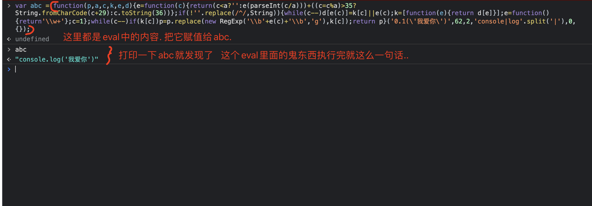
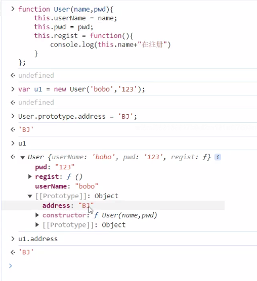
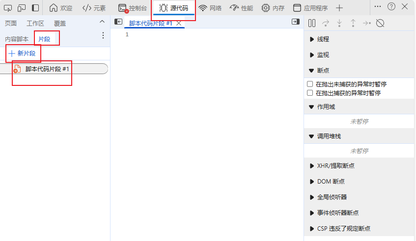
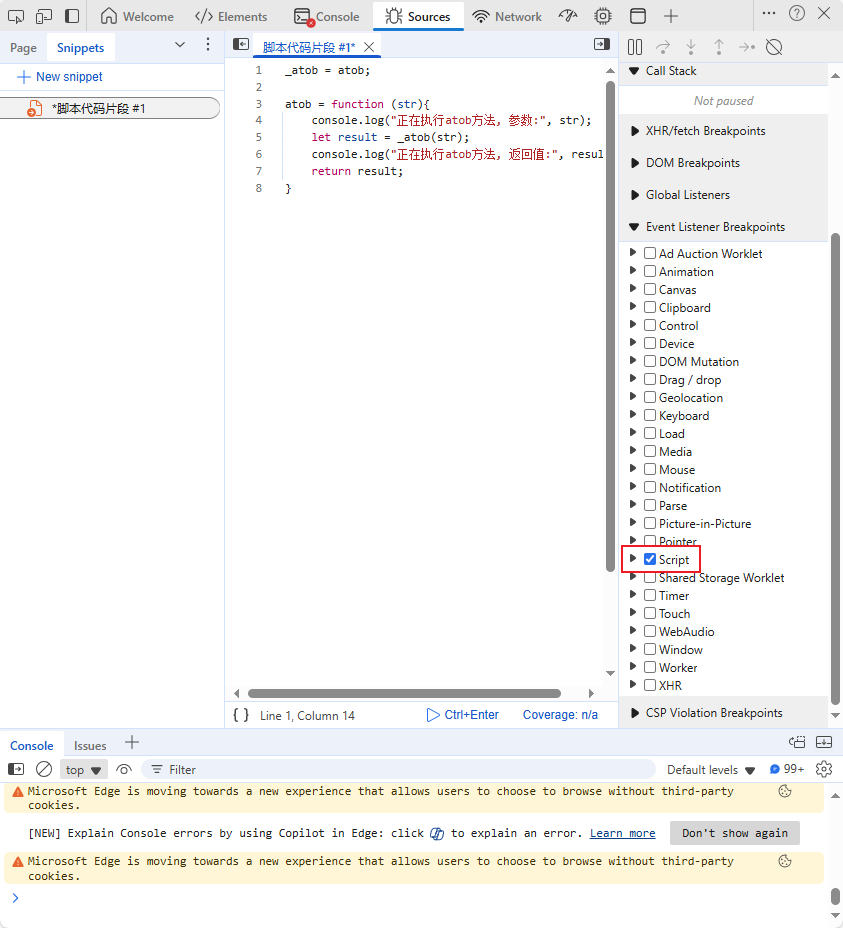
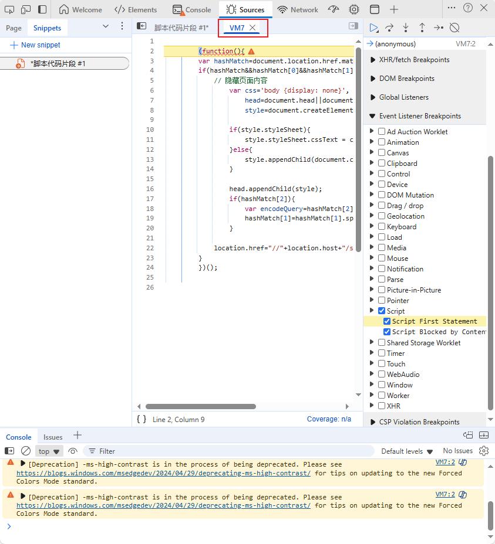
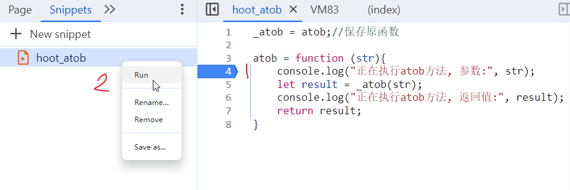
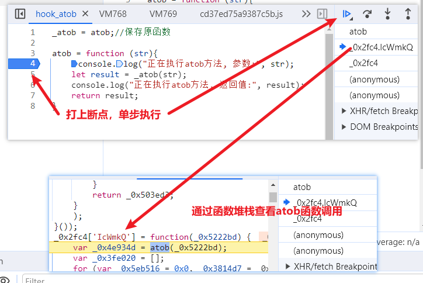
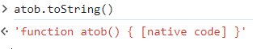
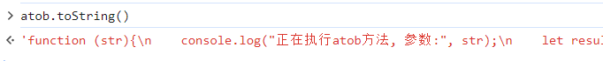

Javascript 基础入门
JavaScript, 是一门能够运行在浏览器上的脚本语言，简称JS。简单来说可以处理前端的一些简单的业务逻辑和用户行为、网页事件的触发和监听。
Js 的基本使用
JS是可以运行在浏览器上的脚本. 并且, 我们知道本质上, 浏览器是执行HTML程序的. 那么如何在HTML中引入JS呢?
直接在<script>标签中引入编写js代码
<!DOCTYPE html>
<html lang="en">
<head>
<meta charset="UTF-8">
<title>内部JavaScript示例</title>
<script>
function greet() {
alert("Hello, World!");
}
</script>
</head>
<body>
<button onclick="greet()">点击我</button>
</body>
</html>
将js代码写在js文件中, 然后通过script标签的src属性进行引入
function greet() {
alert("Hello, World!");
}
HTML
<!DOCTYPE html>
<html lang="en">
<head>
<meta charset="UTF-8">
<title>外部JavaScript示例</title>
</head>
<body>
<button onclick="greet()">点击我</button>
<script src="script.js"></script>
</body>
</html>
Javascript 基本数据类型
在 js 中主要有这么几种数据类型
- 字符串
- 数字
- 布尔值
- Null
- Undefined
- 数组
- Object
- 函数对象
- 日期 Date
- 错误 Error
- 正则 RegExp
- 内置对象：JSON、Math、arguments
在 js 中声明变量用 var 来声明
在 js 中使用 // 来表示单行注释. 使用/* */表示多行注释.
var 变量名; // 创建变量, 此时该变量除了被赋值啥也干不了.
var 变量名 = 值; // 创建一个变量, 并且有值.
var 变量名 = 值1, 变量名2 = 值2, 变量名3 = 值3.....; // 一次创建多个变量.并都有值
var 变量名1, 变量名2, 变量名3 = 值3; // 创建多个变量. 并且只有变量3有值
数据类型转换:
// string -> number : parseInt(字符串)
var a = "10086";
a = parseInt(a); // 变成整数
console.log(a + 10); // 10096
// number -> string : 数字.toString() 或者 数字 + ""
var a = 100;
var b = a.toString();
var c = a + "";
console.log(b);
console.log(c);
// number -> string: 数字转化成16进制的字符串
var m = 122;
var n = m.toString(16);
console.log(n);
// 进制转换：十六进制的AB的十进制是多少
var d = parseInt("AB", 16); // 171
// 自动转换：弱类型中的变量会根据当前代码的需要,进行类型的自动隐式转化
var box1 = 1 + true;
// true 转换成数值,是1, false转换成数值,是0
console.log(box1); // 2
var box2 = 1 + "200";
console.log(box2);
// ‘1200’ 原因是,程序中+的含义有2种,第一: 两边数值相加, 第二: 两边字符串拼接.但是在js中运算符的优先级中, 字符串拼接的优先级要高于整数
// 值的加减乘除,所以解析器优先使用了+号作为了字符串的拼接符号了,因为程序就需要+号两边都是字符串才能完成运算操作,因此1变成字符串了。最终的结果就是 "1" +"200"
var box3 = 1 - "200";
console.log(box3); // -199;因为-号中表示的就是左边的数值减去右边的数值,因此程序就会要求"200"是数值,因此内部偷偷的转换了一下
字符串操作:
// split 正则分割,经常用于把字符串转换成数组
var str = "广东-深圳-南山";
var ret = str.split("-");
console.log( ret );
// substr 截取
var str = "hello world";
var ret = str.substr(0,3);
console.log(ret); // hel
// trim 移除字符串首尾空白
var password = " ge llo ";
var ret = password.trim();
console.log(password.length); // 13
console.log(ret.length); // 6
// 切片,当前方法支持使用负数代表倒数下标
// slice(开始下标) 从开始位置切到最后
// slice(开始下标,结束下标) 从开始下标切到指定位置之前
var str = "helloworld";
var ret = str.slice(3,6); // 开区间,不包含结束下标的内容
console.log(ret); // low
var ret = str.slice(5);
console.log(ret); // world
var ret = str.slice(2,-1);
console.log(ret); // lloworl
s.substring(start, end) //字符串切割, 从start切割到end
s.length //字符串长度
s.charAt(i) //第i索引位置的字符 s[i]
s.indexOf('xxx') //返回xxx的索引位置, 如果没有xxx. 则返回-1
s.lastIndexOf("xxx") //返回xxx的最后一次出现的索引位置，如果没有xxx. 则返回-1
s.toUpperCase() //转换成大写字母
s.startsWith("xxx") //判断是否以xxx开头
s.charCodeAt(i) //某个位置的字符的ascii
String.fromCharCode(ascii) //给出ascii 还原成正常字符
字符串正则：
// match 正则匹配
// js中也存在正则,正则的使用符号和python里面是一样的
// 语法：/正则表达式主体/修饰符(可选)
// 修饰符：
// i:执行对大小写不敏感的匹配。
// g:执行全局匹配（查找所有匹配而非在找到第一个匹配后停止）。
var str = "我的电话是: 13312345678,你的电话: 13512345678";
var ret = str.match(/\d{11}/g); // 匹配,提取数据
console.log(ret);
// replace 正则替换
var str = "我的电话是: 13512345678";
var ret = str.replace(/(\d{3})\d{4}(\d{4})/,"$1****$2"); // 正则的捕获模式 $1$2表示的正则中第一个和第二个小括号捕获的内容
console.log(ret);
// search 正则查找,如果查找不到,则返回-1
var str = "hello";
var ret = str.search(/l/);
console.log(ret);
undefined类型
undefined类型只有一个值，即 undefined。
(1) 当声明的变量未初始化时，该变量的默认值是 undefined。
(2)当函数无明确返回值时，返回的也是值 undefined;
null类型
另一种只有一个值的类型是 null，它只有一个专用值 null，即它的字面量。值 undefined 实际上是从值 null 派生来的，因此 js 把它们定义为相等的。
尽管这两个值相等，但它们的含义不同。undefined 是声明了变量但未对其初始化时赋予该变量的值，null 则用于表示尚未存在的对象。如果函数或方法要返回的是对象，那么找不到该对象时，返回的通常是 null。
原始值和引用值
// 初始值类型
var a = "bobo";
var b = a;
a = "alvin";
console.log(a);//alvin
console.log(b);//bobo
// 对象类型
var arr1=[1,2];
arr2 = arr1;
arr1.push(3);
console.log(arr1)// [1,2,3]
console.log(arr2);//[1,2,3]
arr1=[4,5];
console.log(arr1);//[4,5]
console.log(arr2);//[1,2,3]
运算符
/*
//算术运算符
+ 数值相加
- 数值相减
* 数值相乘
/ 数值相除
% 数值求余
** 数值求幂
a++ 变量被使用后自增1
var a = 10
print(a++) 输出结果为10
print(a) 就是11
++a 变量被使用前自增1
var b = 10
print(++b) 输出的就是11
b-- 变量被使用后自减1
--b 变量被使用前自减1
// 在python中是没有++操作的. 但是在js中是有的.
a++; // 翻译一下就是a = a + 1
++a; // 翻译一下就是a = a + 1
a--; // 翻译一下就是a = a - 1
--a; // 翻译一下就是a = a - 1
//赋值运算符
=
+=
-=
*=
/=
%=
**=
//比较运算符,比较的结果要么是true, 要么是false
> 大于
< 小于
>= 大于或者等于
<= 小于或者等于
!= 不等于[计算数值]
== 等于[计算]
!== 不全等[不仅判断数值,还会判断类型是否一致]
=== 全等[不仅判断数值,还会判断类型是否一致]
let num1 = 3.14;
let num2 = "3.14";
console.log(num1 == num2); // true，因为==运算符会进行类型转换，比较它们的值是否相等
console.log(num1 === num2); // false，因为===运算符不会进行类型转换，比较它们的值和类型是否都相等
//逻辑运算符
&& 并且 and 两边的运算结果为true,最终结果才是true
|| 或者 or 两边的运算结果为false,最终结果才是false
! 非 not 运算符的结果如果是true,则最终结果是false ,反之亦然.
//条件运算符[三目运算符]
条件?true:false
例如:
var age = 12;
var ret = age>=18?"成年":"未成年";
console.log(ret);
*/
流程控制语句
- 分支结构
- 循环结构
分支结构
if 分支语句
if(条件){
// 条件为true时,执行的代码
}
if(条件){
// 条件为true时,执行的代码
}else{
// 条件为false时,执行的代码
}
if(条件1){
// 条件1为true时,执行的代码
}else if(条件2){
// 条件2为true时,执行的代码
}....
}else{
// 上述条件都不成立的时候,执行的代码
}
switch语句
switch(条件){
case 结果1:
满足条件执行的结果是结果1时,执行这里的代码..
break;
case 结果2:
满足条件执行的结果是结果2时,执行这里的代码..
break;
.....
default:
条件和上述所有结果都不相等时,则执行这里的代码
}
switch('a'):
case 1: //只会会执行case 1下面的xxx代码
xxx
break;
case 2:
xxx
break;
default:
xxx
break
1、switch比if else更为简洁
2、执行效率更高。switch…case会生成一个跳转表来指示实际的case分支的地址，而这个跳转表的索引号与switch变量的值是相等的。从而，switch…case不用像if…else那样遍历条件分支直到命中条件，而只需访问对应索引号的表项从而到达定位分支的目的。
3、到底使用哪一个选择语句，代码环境有关，如果是范围取值，则使用if else语句更为快捷；如果是确定取值，则使用switch是更优方案。
循环语句
while 循环
while(循环的条件){
// 循环条件为true的时候,会执行这里的代码
}
循环案例：
var count = 0
while (count<10){
console.log(count);
count++;
}
for 循环
// 循环三要素
for(1.声明循环的开始; 2.条件; 4. 循环的计数){
// 3. 循环条件为true的时候,会执行这里的代码
}
for(循环的成员下标 in 被循环的数据){
// 当被循环的数据一直没有执行到最后下标,都会不断执行这里的代码
}
循环案例：
// 方式1
for (var i = 0;i<10;i++){
console.log(i)
}
// 方式2
var arr = [111,222,333]
for (var i in arr){
console.log(i,arr[i])
}
退出循环（break和continue）
for (var i = 0;i<100;i++){
if (i===88){
continue // 退出当次循环
// break // 退出当前整个循环
}
console.log(i)
}
数组对象
创建数组
创建方式1:
var arrname = [元素0,元素1,….]; // var arr=[1,2,3];
创建方式2:
var arrname = new Array(元素0,元素1,….); // var test=new Array(100,"a",true);
数组方法
var arr = ["A","B","C","D"];
// 内置属性
console.log( arr.length );
// 获取指定下标的成员
console.log( arr[3] ); // D
console.log( arr[arr.length-1] ); // 最后一个成员
// (1) pop() 出栈,删除最后一个成员作为返回值
var arr = [1,2,3,4,5];
var ret = arr.pop();
console.log(arr); // [1, 2, 3, 4]
console.log(ret); // 5
// (2) push() 入栈,给数组后面追加成员
var arr = [1,2,3,4,5];
arr.push("a");
console.log(arr); // [1, 2, 3, 4, 5, "a"]
// (3) shift是将数组的第一个元素删除
var arr = [1,2,3,4,5];
arr.shift()
console.log(arr); // [2, 3, 4, 5]
// (4) unshift是将value值插入到数组的开始
var arr = [1,2,3,4,5];
arr.unshift("bobo")
console.log(arr); // ["bobo",1,2, 3, 4, 5]
// (5) reverse() 反转排列
var arr = [1,2,3,4,5];
arr.reverse();
console.log(arr); // [5, 4, 3, 2, 1]
// (6) slice(开始下标,结束下标) 切片,开区间
var arr = [1,2,3,4,5];
console.log(arr.slice(1,3));
// (7) concat() 把2个或者多个数组合并
var arr1 = [1,2,3];
var arr2 = [4,5,7];
var ret = arr1.concat(arr2);
console.log( ret );
// (8) join() 把数组的每一个成员按照指定的符号进行拼接成字符串
var str = "广东-深圳-南山";
var arr = str.split("-");
console.log( arr ); // ["广东", "深圳", "南山"];
var arr1 = ["广东", "深圳", "南山"];
var str1 = arr1.join("-");
console.log( str1 ); // 广东-深圳-南山
遍历数组
var arr = [12,23,34]
for (var i in arr){
console.log(i,arr[i])
}
实例对象
概念：通过new关键字创建的对象（调用构造函数）称为实例对象。
创建实例对象：
let u1 = new User('jay','123');
let u2 = new User('tom','456');
原型对象
- 概念：原型对象用于存储所有实例对象共享的属性和方法，以减少每个实例对象重复存储相同属性和方法的开销。
- 原型对象存储所有实例对象共享的属性和方法
//类似于类属性
User.prototype.address = "BJ";
User.prototype.gender = "male";
//类似于类方法
User.prototype.login = function login(username, password){
console.log(`${username}在登录`);
}
//实例对象共享原型对象存储的内容
u1.login('jay','123');
u2.login('tom','456');
console.log(u1.address,u2.address,u1.gender,u2.gender);
获取原型对象：
User.prototype;
u1.__proto__;
User.prototype === u1.__proto__ //true
//可以通过原型名访问原型对象或者使用实例名访问原型对象
Object 对象
object 对象的基本操作
Object 的实例不具备多少功能，但对于在应用程序中存储和传输数据而言，它们确实是非常理想的选择。
创建 object 对象
创建对象的三种方式：重点后面两种。
// 方式1（基本不用）
var person = new Object();
person.name = "keti";
person.eat = function () {
console.log('i am eating!')
}
console.log(person.name)
person.eat()
//方式2(常用)
var person2 = {
name: "keti",
eat: function () {
console.log('i am eating!')
}
}
// 方式3（重点）
function Person(name, age){
this.name = name;
this.age = age;
ehit.eat = function () {
console.log('i am eating!')
}
}
keti = new Person('keti', 18)
访问 Object 对象
Object 可以通过. 和 []来访问。
console.log(person["age"]);
console.log(person.age)
object 可以通过 for 循环遍历
for (var attr in person){
console.log(attr,person[attr]);
}
或者：
function People(name, age){
this.name = name;
this.age = age;
this.chi = function(){
console.log(this.name, "在吃东西")
}
}
p1 = new People("alex", 18);
p2 = new People("wusir", 20);
p1.chi();
p2.chi();
Object 对象常用成员
重点：
//判断对象类型 typeof 和 Object.prototype.toString.call（Object原型对象）
console.log('数字1',typeof 1);
console.log("字符串1",typeof "1");
console.log('空对象{}',typeof {});
console.log('布尔true',typeof true);
console.log('空数组[]',typeof []);
console.log('null空',typeof null);
console.log('undefined',typeof undefined);
console.log('函数function (){}',typeof function (){});
//发现null和空数组[]类型都是object类型（无法区分具体类型）
console.log("=================================")
console.log(Object.prototype.toString.call(1));
console.log(Object.prototype.toString.call("1"));
console.log(Object.prototype.toString.call({}));
console.log(Object.prototype.toString.call(true));
console.log(Object.prototype.toString.call([]));
console.log(Object.prototype.toString.call(null));
console.log(Object.prototype.toString.call(undefined));
console.log(Object.prototype.toString.call(function () {}));
//创建新对象，设置其原型对象为window（在node环境下可能需要伪装浏览器环境下的对象）
a = Object.create(window)
a.__proto__ === window //true
//判断对象自身属性中是否具有指定的属性
function func(){
this.name="bobo";
this.getAge=function(){}
};
f = new func();
f.hasOwnProperty('name'); //true
f.hasOwnProperty('getAge'); //true
f.hasOwnProperty('toString'); //false
//获取指定对象上一个自有属性对应的属性描述符
Object.getOwnPropertyDescriptor(f,'name');
//获取指定对象上所有属性对应的属性描述符
Object.getOwnPropertyDescriptors(f);
/*
属性描述符是一组用于精确定义和描述对象属性的特性的集合(属性描述符也是一个对象)。通过属性描述符，开发者可以指定一个属性是否可被修改、删除、枚举或者通过特定的函数来获取和设置其值。
*/
//获取实例对象的原型对象
Object.getPrototypeOf(f);
Object.getPrototypeOf(f) === f.__proto__ ;//true
//设置一个指定的对象的原型(可以对一个已经存在的对象重新设置其原型对象)
Object.setPrototypeOf(f,Object.__proto__) //f对象的原型对象设置成了window的原型对象
//defineProperty直接在一个对象上定义一个新属性，然后可指定新属性的属性描述的，并返回此对象。
let User = {
"name":"小明",
}//创建一个User对象
//给对象添加两个成员
User.age = 10;
User["age"] = 20;
//给对象定义一个新属性且设置其属性描述符（属性描述符可分为：数据描述符和存取描述符）此时使用数据描述符。
//参数1：对象。参数2：属性名。参数3：属性描述的
Object.defineProperty(User, "height", {
enumerable:true, //该属性是否可遍历
configurable:true,//该属性是否可配置:决定该属性是否可以被删除或修改其属性描述符。
value:160, //属性的值
writable:false //该属性的值是否可以通过赋值运算符改变
});
//对象属性遍历,如果某个属性的文件描述符中的enumerable:false则无法遍历出该属性
for (const userKey in User) {
console.log(userKey);
}
//存取描述符
let Stu = {
"name":"小红",
}//创建一个Stu对象
let temp = null;//临时变量
//给Stu对象定义一个新属性score，且设置其属性描述符
Object.defineProperty(Stu, "score", {
enumerable:true,
configurable:true,
get:function (){// 当获取属性值是调用
console.log("正在获取值");
return temp;
},
set:function (value){// 当对属性进行赋值操作时调用
console.log("正在设置值");
temp = value;
}
});
console.log(User.score);
User.score = 100;
console.log(User.score);
/*
属性描述符注意事项：属性描述符分为两类：数据描述符和存取描述符。数据描述符包含value、writable、enumerable和configurable这些属性。存取描述符包含get、set、enumerable和configurable。两者不能混用，即一个描述符如果是数据描述符就不能包含get或set，反之亦然。
*/
json 序列化和反序列化
JSON：JavaScript 对象表示法，是一种轻量级的数据交换格式。易于人阅读和编写。
- json 是一种数据格式, 语法一般是
{}或者[]包含起来。 - 内部成员以英文逗号隔开,最后一个成员不能使用逗号!
- 可以是键值对,也可以是列表成员
- json中的成员如果是键值对,则键名必须是字符串.而json中的字符串必须使用双引号圈起来
- json数据也可以保存到文件中,一般以".json"结尾.
{
"name" : "xiaoming",
"age" : 12
}
[1,2,3,4]
{
"name": "xiaoming",
"age":22,
"sex": true,
"son": {
"name":"xiaohuihui",
"age": 2
},
"lve": ["篮球","唱","跳"]
}
js中也支持序列化和反序列化的方法：
<!DOCTYPE html>
<html lang="en">
<head>
<meta charset="UTF-8">
<title>Title</title>
</head>
<body>
<script>
// js对象,因为这种声明的对象格式很像json,所以也叫json对象
var data = {
name: "xiaoming",
age: 22,
say: function(){
alert(123);
}
};
// 把对象转换成json字符串
var ret = JSON.stringify(data);
console.log(ret); // {"name":"xiaoming","age":22}
// 把json字符串转换成json对象
var str = `{"name":"xiaoming","age":22}`;
var ret = JSON.parse(str);
console.log(ret);
</script>
</body>
</html>
序列化：将对象转换成字符串类型（可以将对象进行持久化存储）
反序列化：将JSON格式的字符串转换成对象类型
Date 对象
创建 Date 对象
//方法1：不指定参数
var nowd1=new Date(); //获取当前时间
console.log(nowd1);
console.log(nowd1.toLocaleString( ));
//方法2：参数为日期字符串
var d2=new Date("2004/3/20 11:12");
console.log(d2.toLocaleString( ));
var d3=new Date("04/03/20 11:12");
console.log(d3.toLocaleString( ));
获取时间信息
获取日期和时间
var date=new Date();
date.getDate()();
getDate() 获取日
getDay () 获取星期
getMonth () 获取月（0-11）
getFullYear () 获取完整年份
getHours () 获取小时
getMinutes () 获取分钟
getSeconds () 获取秒
getMilliseconds () 获取毫秒
Math对象
// Math对象的内置方法
// abs(x) 返回数值的绝对值
var num = -10;
console.log( Math.abs(num) ); // 10
// ceil(x) 向上取整
var num = 10.3;
console.log( Math.ceil(num) ); // 11
// floor(x) 向下取整
var num = 10.3;
console.log( Math.floor(num) ); // 10
// max(x,y,z,...,n)
console.log( Math.max(3,56,3) ); // 56
// min(x,y,z,...,n)
// random() 生成0-1随机数
console.log( Math.random() );
// 生成0-10之间的数值
console.log( Math.random() * 10 );
// round(x) 四舍五入
// 生成0-10之间的整数
console.log( Math.round( Math.random() * 10 ) );
函数
函数在程序中代表的就是一段具有功能性的代码，可以让我们的程序编程更加具有结构性和提升程序的复用性,也能让代码变得更加灵活强大。
声明函数
function 函数名 (参数){
函数体;
return 返回值;
}
功能说明：
- 可以使用变量、常量或表达式作为函数调用的参数
- 函数由关键字function定义
- 函数名的定义规则与标识符一致，大小写是敏感的
- 返回值必须使用return
函数的定义方式2
用 Function 类直接创建函数
var 函数名 = new Function("参数1","参数n","function_body");
函数调用
//f(); --->OK
function f(){
console.log("hello")
}
f() //----->OK
不同于python，js代码在运行时，会分为两大部分———检查装载 和 执行阶段。
- 检查装载阶段：会先检测代码的语法错误，进行变量、函数的声明
- 执行阶段：变量的赋值、函数的调用等，都属于执行阶段。
函数参数
参数基本使用
// 位置参数
function add(a,b){
console.log(a);
console.log(b);
}
add(1,2)
add(1,2,3)
add(1)
// 默认参数
function stu_info(name,gender="male"){
console.log("姓名："+name+" 性别："+gender)
}
stu_info("bobo")
函数返回值
在函数体内，使用 return 语句可以设置函数的返回值。一旦执行 return 语句，将停止函数的运行，并运算和返回 return 后面的表达式的值。如果函数不包含 return 语句，则执行完函数体内每条语句后，返回 undefined 值。
function add(x,y) {
return x,y
}
var ret = add(2,5);
console.log(ret)
1、在函数体内可以包含多条 return 语句，但是仅能执行一条 return 语句
2、函数的参数没有限制，但是返回值只能是一个；如果要输出多个值，可以通过数组或对象进行设计。
函数作用域
作用域是JavaScript最重要的概念之一。
JavaScript中，变量的作用域有全局作用域和局部作用域两种。
- 局部变量,是在函数内部声明,它的生命周期在当前函数被调用的时候, 当函数调用完毕以后,则内存中自动销毁当前变量
- 全局变量,是在函数外部声明,它的生命周期在当前文件中被声明以后就保存在内存中,直到当前文件执行完毕以后,才会被内存销毁掉
作用域案例：
var num = 10; // 在函数外部声明的变量, 全局变量
function func(){
//千万不要再函数内部存在和全局变量同名的变量
num = 20; // 函数内部直接使用变量,则默认调用了全局的变量,
}
func();
console.log("全局num：",num);
匿名函数
匿名函数，即没有变量名的函数。在实际开发中使用的频率非常高！也是学好 JS 的重点。
匿名函数赋值变量
var foo = function () {
console.log("这是一个匿名函数！")
};
foo() //调用匿名函数
匿名函数的自执行，加一个小括号
(function (x,y) {
console.log(x+y);
})(2,3)
匿名函数作为一个高阶函数使用
function bar() {
return function () {
console.log("inner函数！")
}
}
bar()()
function bar() {
return function () {
console.log("inner函数！")
return function () {
console.log("我是函数返回值的返回值")
}
}
}
bar()()
Javascript 进阶
变量提升(不正常现象)
看以下代码, 或多或少会有些问题的.
function fn(){
console.log(name);
var name = '大马猴';
}
fn()
发现问题了么. 这么写代码, 在其他语言里. 绝对是不允许的. 但是在js里. 不但允许, 还能执行. 为什么呢? 因为在js执行的时候. 它会首先检测你的代码. 发现在代码中会有name使用. OK. 运行时就会变成这样的逻辑:
function fn(){
var name;
console.log(name);
name = '大马猴';
}
fn()
console.log(a);
看到了么. 实际运行的时候和我们写代码的顺序可能会不一样....这种把变量提前到代码块第一部分运行的逻辑被称为变量提升. 这在其他语言里是绝对没有的. 并且也不是什么好事情. 正常的逻辑不应该是这样的. 那么怎么办? 在新的ES6中. 就明确了, 这样使用变量是不完善的. es6提出. 用let来声明变量. 就不会出现该问题了.
function fn(){
console.log(name); // 直接报错, let变量不可以变量提升.
let name = '大马猴';
}
fn()
== 结论一, 用let声明变量是新版本javascript提倡的一种声明变量的方案. ==
let 还有哪些作用呢?
function fn(){
var name = "周杰伦";
var name = "王力宏";
console.log(name);
}
fn()
显然一个变量被声明了两次. 这样也是不合理的. var本意是声明变量. 同一个东西. 被声明两次. 所以ES6规定. let声明的变量. 在同一个作用域内. 只能声明一次.
function fn(){
let name = "周杰伦";
console.log(name);
let name = "王力宏";
console.log(name);
}
fn()
注意, 报错是发生在代码检查阶段. 所以. 上述代码根本就执行不了.
== 结论二, 在同一个作用域内. let声明的变量只能声明一次. 其他使用上和var没有差别。 ==
闭包函数
我们先看一段代码.
let name = "周杰伦";
function chi(){
name = "吃掉";
}
chi();
console.log(name); // 输出 “吃掉”
发现没有, 在函数内部想要修改外部的变量是十分容易的一件事. 尤其是全局变量. 这是非常危险的. 试想, 我写了一个函数. 要用到name, 结果被别人写的某个函数给修改掉了. 多难受.
接下来. 我们来看一个案例:
同时运行下面两组代码：
// 1号工具人.
var name = "alex"
setTimeout(function(){
console.log("一号工具人:"+name) // 一号工具人还以为是alex呢, 但是该变量是不安全的.
}, 5000);
// 2号工具人
var name = "周杰伦"
console.log("二号工具人", name);
两组代码是在同一个空间内执行的. 他们拥有相同的作用域. 此时的变量势必是非常非常不安全的. 那么如何来解决呢? 注意, 在js里. 变量是有作用域的. 也就是说一个变量的声明和使用是有范围的. 不是无限的. 这一点, 很容易验证.
function fn(){
let love = "爱呀"
}
fn()
console.log(love)
直接就报错了. 也就是说. 在js里是有全局和局部的概念的.
直接声明在最外层的变量就是全局变量. 所有函数, 所有代码块都可以共享的. 但是反过来就不是了. 在函数内和代码块内声明的变量. 它是一个局部变量. 外界是无法进行访问的. 我们就可以利用这一点来给每个工具人创建一个局部空间. 就像这样:
// 1号工具人.
(function(){
var name = "alex";
setTimeout(function(){
console.log("一号工具人:"+name) // 一号工具人还以为是alex呢, 但是该变量是不安全的.
}, 5000);
})();
// 二号工具人
(function(){
var name = "周杰伦"
console.log("二号工具人", name);
})();
这样虽然解决了变量的冲突问题. 但是...我们想想. 如果在函数外面需要函数内部的一些东西来帮我进行相关操作怎么办...比如, 一号工具人要提供一个功能(加密). 外界要调用. 怎么办?
// 1号工具人.
let encrypt_tool = (function(){
let log_msg = '开始加密......\n'
// 我是一个加密函数
let encrypt = function(data){ // 数据
console.log(log_msg) //打印日志信息（访问外部变量）
// 返回密文
return atob(data);
}
// 外面需要用到这个功能啊. 你得把这个东东返回啊. 返回加密函数
return encrypt;
})();
//外部调用
console.log(encrypt_tool('i love you'));
注意了. 我们如果封装一个加密js包的时候. 好像还得准备出解密的功能. 并且, 不可能一个js包就一个功能吧. 那怎么办? 我们可以返回一个对象. 对象里面可以存放好多个功能. 而一些不希望外界触碰的功能. 就可以很好的保护起来.
// 1号工具人.
let encrypt_tool = (function(){
let log_msg_1 = '开始加密......'
let log_msg_2 = '开始解密......'
// 我是一个加密函数
let encrypt = function(data){ // 被加密数据
console.log(log_msg_1) //打印日志信息（访问外部变量）
// 返回密文
return atob(data);
};
//解密函数
let decrypt = function(en_data){ // 加密后的数据
console.log(log_msg_2) //打印日志信息（访问外部变量）
// 返回解密后的原数据
return btoa(en_data);
};
// 外面需要用到这个功能啊. 你得把这个东东返回啊. 返回加密函数
return {'encrypt':encrypt,'decrypt':decrypt};
})();
//外部调用
en_data = encrypt_tool.encrypt('i love you');
de_data = encrypt_tool.decrypt(en_data)
console.log(en_data);
console.log(de_data);
OK. 至此. 何为闭包? 上面这个就是闭包. 相信你百度一下就会知道. 什么内层函数使用外层函数变量. 什么让一个变量常驻内存.等等. 其实你细看. 它之所以称之为闭包。它是一个封闭的环境. 在内部，自己和自己玩儿. 避免了对该模块内部的冲击和改动. 避免的变量之间的冲突问题。
闭包的特点:
- 内层函数对外层函数变量的使用.
- 会让变量常驻与内存.
JS中的各种操作(非交互)
定时器
在JS中, 有两种设置定时器的方案
t = setTimeout(函数, 时间)
// 经过xxx时间后, 执行xxx函数
// 示例：3秒后打印我爱你
t = setTimeout(function(){
console.log("我爱你")
}, 3000);
window.clearTimeout(t) // 停止一个定时器
eval函数(必须会. 隔壁村老太太都会.)
eval本身在js里面正常情况下使用的并不多. 但是很多网站会利用eval的特性来完成反爬操作。
从功能上讲, eval非常简单. 它和python里面的eval是一样的. 它可以动态的把字符串当成js代码进行运行。
s = "console.log('我爱你')";
eval(s);
也就是说. eval里面传递的应该是即将要执行的代码(字符串). 那么在页面中如果看到了eval加密该如何是好? 其实只要记住了一个事儿. 它里面不论多复杂. 一定是个字符串.
比如：
eval(function(p,a,c,k,e,d){e=function(c){return(c<a?'':e(parseInt(c/a)))+((c=c%a)>35?String.fromCharCode(c+29):c.toString(36))};if(!''.replace(/^/,String)){while(c--)d[e(c)]=k[c]||e(c);k=[function(e){return d[e]}];e=function(){return'\\w+'};c=1};while(c--)if(k[c])p=p.replace(new RegExp('\\b'+e(c)+'\\b','g'),k[c]);return p}('0.1(\'我爱你\')',62,2,'console|log'.split('|'),0,{}))
这一坨看起来, 肯定很不爽. 怎么变成我们看着很舒服的样子呢? 记住. eval()里面是字符串. 记住~!!
那我想看看这个字符串长什么样? 就把eval()里面的东西拷贝出来. 执行一下. 最终一定会得到一个字符串. 要不然eval()执行不了的. 对不...于是就有了下面的操作.

http://tools.jb51.net/password/evalencode 再在赠送你一个在线JS处理eval的网站. 大多数的eval加密. 都可以搞定了.
prototype 和 __proto__
逆向代码示例：
function ct(t) {
pv['$_BCAO'] = t || [];
}
ct.prototype = {
'$_CAE':function(f) {
f();
}
}
var H = new ct(t)['$_CAE'](function(t) {
var e = function(t) {
for (var e = [[1, 0], [2, 0], [1, -1], [1, 1], [0, 1], [0, -1], [3, 0], [2, -1], [2, 1]], r = e['length'],n = 0; n < r; n++){
var b = 'stuvwxyz~';
}
return b;
};
return e;
})
ct.prototype = {
'$_CAE':function(f) {
f();
}
}
示例：
function People(name, age){
this.name = name;
this.age = age;
this.run = function(){
console.log(this.name+"在跑")
}
}
p1 = new People("张三", 18);
p2 = new People("李四", 19);
p1.run();
p2.run();
我现在代码写完了. 突然之间, 我感觉好像少了个功能. 人不应该就一个功能. 光会跑是不够的. 还得能够学习. 怎么办? 直接改代码? 可以. 但不够好. 如果这个代码封装不是我写的呢? 随便改别人代码是很不礼貌的. 也很容易出错. 怎么办? 我们可以在我们自己代码中对某个类型动态增加功能. 此时就用到了prototype.
//对象的模版：类
function People(name, age){
this.name = name;
this.age = age;
this.run = function(){
console.log(this.name+"在跑")
}
}
//People.prototype原型对象
People.prototype.address = "Beijing";
// 通过prototype可以给People增加功能
People.prototype.study = function(){
console.log(this.name+"还可以学习");
}
//通过对象模版创建的实例对象
var p1 = new People("张三", 18);
var p2 = new People("李四", 19);
p1.run();
p2.run();
p1.study();
p2.study();
能看到一些效果了是吧. 也就是说. 可以通过prototype给我们的对象增加一些功能. 那么，什么是prototype呢？
接下来. 聊几个重要的概念.
原型和原型链
- 原型
概念：原型本身其实是一个function函数(构造函数)，可以将其理解成Python中的class类。
创建一个原型：
function User(name,pwd){
this.userName = name;
this.pwd = pwd;
this.regist = function(){
console.log(this.name+"在注册")
}
}
注意：
/*
如下代码是使用字面量方式创建对象时，直接使用花括号{}来定义对象的属性和方法。这种方式创建的对象是一个简单的键值对集合，没有原型链和构造函数。
*/
let a = {'name':'bobo'};
/*
通过定义一个构造函数B()，然后使用new关键字来创建一个新的对象实例。这种方式创建的对象可以继承构造函数的原型属性和方法，从而实现面向对象编程的特性。
*/
function B(){
this.name="bobo";
}
let b = new B();
- 实例对象
概念：通过new关键字创建的对象（调用构造函数）称为实例对象。
创建实例对象：
let u1 = new User('jay','123');
let u2 = new User('tom','456');
- 原型对象
概念：原型对象用于存储所有实例对象共享的属性和方法，以减少每个实例对象重复存储相同属性和方法的开销。
原型对象存储所有实例对象共享的属性和方法
//类似于类属性
User.prototype.address = "BJ";
User.prototype.gender = "male";
//类似于类方法
User.prototype.login = function login(username, password){
console.log(`${username}在登录`);
}
//实例对象共享原型对象存储的内容
u1.login('jay','123');
u2.login('tom','456');
console.log(u1.address,u2.address,u1.gender,u2.gender);
获取原型对象：
User.prototype;
u1.__proto__;
User.prototype === u1.__proto__ //true
//可以通过原型名访问原型对象或者使用实例名访问原型对象
每一个js对象中. 都有一个隐藏属性__proto__指向该对象的原型对象. （People.prototype）
原型对象用于存储所有实例对象共享的属性和方法，以减少每个实例对象重复存储相同属性和方法的开销。
在执行该对象的方法或者查找属性时. 首先, 对象自己是否存在该属性或者方法. 如果存在, 就执行自己的. 如果自己不存在. 就去找原型对象.
p1.toString() //显然p1对象是没有该方法的，但是确实可以调用该方法，通过查看p1的原型，发现在Object中存在toString方法。
实例对象是可以共享它的原型链上所有的原型对象存在的成员
对象的原型成员重写：
function Friend(){
this.chi = function(){
console.log("我的朋友在吃");
}
}
Friend.prototype.chi = function(){
console.log("我的原型在吃")
}
f = new Friend();
f.chi(); // 此时，该对象中有chi这个方法. 同时, 它的原型对象上, 也有chi这个方法.
// 运行结果: 我的朋友在吃
prototype和__proto__有什么关系?
在js中. 函数名的prototype属性和对象的__proto__是一个东西. 都是指向这个原型对象.
f.__proto__ === Friend.prototype // true
- 原型链
原型链是 JavaScript 中对象继承属性和方法的一种方式。具体介绍如下：
当访问一个对象的属性或方法时，如果该对象本身没有这个属性或方法，它会通过原型链去它的原型对象中查找，如果原型对象也没有，会继续在其原型的原型中查找，这样逐级向上，直到找到属性或方法或者达到原型链的末端。
原型对象本身也是一个对象，它也可以使用 __proto__ 访问它的原型对象，类似于：
类似于.....这样:
f.__proto__.__proto__
此时. 又出现一堆看不懂的玩意. 这些玩意是什么? 这些其实是Object的原型.
f.__proto__.__proto__ === Object.prototype
-
原型链的成员访问：
- 实例对象可以访问其原型内的成员和其原型链上所有原型对象内的成员
User.toString()

练习测试：理解下属代码
function ct(t) {
pv['$_BCAO'] = t || [];
}
var H = new ct(t)['$_CAE'](function(t) {
var e = function(t) {
for (var e = [[1, 0], [2, 0], [1, -1], [1, 1], [0, 1], [0, -1], [3, 0], [2, -1], [2, 1]], r = e['length'],n = 0; n < r; n++){
var b = 'stuvwxyz~';
}
return b;
};
return e;
})
ct.prototype = {
'$_CAE':function(f) {
f();
}
}
重点总结：
- prototype关键字是可以给对象动态添加成员
- 原型对象中的成员是可以被所有实例对象共享
- 对象在调用某一个成员时，该成员有可能是对象自身封装的成员也可能是该对象原型上的成员
原型链相关概念
- 原型
- 概念：原型本身其实是一个function函数(构造函数)，可以将其理解成Python中的class类。
- 创建一个原型：
function User(name,pwd){
this.userName = name;
this.pwd = pwd;
this.regist = function(){
console.log(this.name+"在注册")
}
}
- 注意：
/*
如下代码是使用字面量方式创建对象时，直接使用花括号{}来定义对象的属性和方法。这种方式创建的对象是一个简单的键值对集合，没有原型链和构造函数。
*/
let a = {'name':'bobo'};
/*
通过定义一个构造函数B()，然后使用new关键字来创建一个新的对象实例。这种方式创建的对象可以继承构造函数的原型属性和方法，从而实现面向对象编程的特性。
*/
function B(){
this.name="bobo";
}
let b = new B();
神奇的 window 对象（浏览器环境）
window 对象是一个很神奇的东西. 你可以把这东西理解成 javascript 的全局. 如果我们默认不用任何东西访问一个标识符. 那么默认认为是在用 window 对象进行访问该标识符.
例如:
var a = 10;
a === window.a // true
window.mm = "爱你"
console.log(mm); //"爱你"
综上, 我们可以得出一个结论. 全局变量可以用window.xxx来表示.
注意:window对象实际上表示的是浏览器的窗口。浏览器的窗口只有浏览器有。我们在浏览器中的开发者工具的 Console 选项卡中是可以直接使用 window 对象。
所以切记：window对象是专属于浏览器环境下的一个内置对象。就意味着 window 只可以在浏览器环境下无需声明直接被使用。
ok. 接下来. 注意看了. 我要搞事情了
//如果想在外部调用下面函数的中的chi函数如何实现？
(function(){
let chi = function(){
console.log("我是吃")
}
})();
chi() //会报错，因为chi是一个局部变量
//正确写法：
(function(){
let chi = function(){
console.log("我是吃")
}
window.chi = chi //全局的
})();
chi();
//换一种写法. 你还认识么?
(function(w){
let chi = function(){
console.log("我是吃")
}
w.chi = chi
})(window);
如何在node环境下执行上述代码？
globalThis 在浏览器和node中都可以使用。
//全局变量的声明
globalThis.a = 10;
console.log(a);
window是整个浏览器的全局作用域.
使用 window 对象也可以访问客户端其他对象，这种关系构成浏览器对象模型，window 对象代表根节点，浏览器对象关系的关系如图所示，每个对象说明如下。
- window：客户端 JavaScript 顶层对象。每当 <body> 或 <frameset> 标签出现时，window 对象就会被自动创建。
- navigator：包含客户端有关浏览器信息。
- screen：包含客户端屏幕的信息。
- history：包含浏览器窗口访问过的 URL 信息。
- location：包含当前网页文档的 URL 信息。
- document：包含整个 HTML 文档，可被用来访问文档内容及其所有页面元素。
window对象树：https://www.processon.com/view/link/66497878cfe67e27899b9e70?cid=66488d812b49420be3452fa3
call 和 apply
对于咱们逆向工程师而言. 并不需要深入的理解call和apply的本质作用. 只需要知道这玩意执行起来的逻辑顺序是什么即可（外部函数关联对象的内部成员）
在运行时. 正常的js调用:
function People(name, age){
this.name = name;
this.age = age;
this.chi = function(){
console.log(this.name, "在吃东西")
}
}
var p1 = new People("alex", 18);
var p2 = new People("wusir", 20);
p1.chi();
p2.chi();
接下来, 我们可以使用call和apply也完成同样的函数调用
function People(name, age){
this.name = name;
this.age = age;
this.chi = function(){
console.log(this.name, "在吃东西")
}
}
p1 = new People("alex", 18);
p2 = new People("wusir", 20);
p1.chi(); // alex 在吃东西
p2.chi(); // wusir 在吃东西
//外部函数关联对象的内部函数：
//想要让alx吃："馒头", "大饼"，如何调用下面的函数？
function eat(what_1, what_2){
console.log(this.name, "在吃", what_1, what_2);
}
// call的语法是: 函数.call(对象, 参数1, 参数2, 参数3....)
// 执行逻辑是: 执行函数. 并把对象传递给函数中的this. 其他参数照常传递给函数
eat.call(p1, "馒头", "大饼");
apply和他几乎一模一样. 区别是: apply传递参数要求是一个数组
eat.apply(p1, ["馒头", "大饼"]);
ES6中的箭头函数
在ES6中简化了函数的声明语法.
var fn = function(){};
// 如果箭头函数不需要参数或需要多个参数，就使用一个圆括号代表参数部分。
var fn = () => {};
var fn = function(name){}
var fn = name => {}
var fn = (name) => {}
var fn = function(name, age){}
var fn = (name, age) => {}
var f = v => v*v
// 等同于
var f = function(v) {
return v*v
}
exports
类似Python中的模块导入
// functions.js文件
// 加法函数
function add(a, b) {
return a + b;
}
// 乘法函数
function multiply(a, b) {
return a * b;
}
// 导出函数
exports.add = add;
exports.multiply = multiply;
// main.js
// 导入 functions 模块
const functions = require('./functions');
// 使用导入的函数
console.log(functions.add(2, 3)); // 输出: 5
console.log(functions.multiply(4, 5)); // 输出: 20
DOM对象(了解)
DOM document Object Model 文档对象模型
整个html文档,会保存一个文档对象document
console.log( document ); // 获取当前文档的对象
查找标签
- 直接查找标签
document.getElementsByTagName("标签名")
document.getElementById("id值")
document.getElementsByClassName("类名")
//返回dom对象，就是标签对象或者数组
- CSS选择器查找
document.querySelector("css选择器") //根据css选择符来获取查找到的第一个元素，返回标签对象（dom对象）
document.querySelectorAll("css选择器"); // 根据css选择符来获取查找到的所有元素,返回数组
<!DOCTYPE html>
<html lang="en">
<head>
<meta charset="UTF-8">
<title>Title</title>
</head>
<body>
<div id="i1">DIV1</div>
<div class="c1">DIV</div>
<div class="c1">DIV</div>
<div class="c1">DIV</div>
<div class="outer">
<div class="c1">item</div>
</div>
<div class="c2">
<div class="c3">
<ul class="c4">
<li class="c5" id="i2">111</li>
<li>222</li>
<li>333</li>
</ul>
</div>
</div>
<script>
// 直接查找
var ele = document.getElementById("i1"); // ele就是一个dom对象
console.log(ele);
var eles = document.getElementsByClassName("c1"); // eles是一个数组 [dom1,dom2,...]
console.log(eles);
var eles2 = document.getElementsByTagName("div"); // eles2是一个数组 [dom1,dom2,...]
console.log(eles2);
//定位outer下的c1对应的标签
var outer = document.getElementsByClassName("outer")[0];
var te = outer.getElementsByClassName("c1");
console.log(te);
// css选择器
//层级定位(空格可以表示一个或多个层级)
var dom = document.querySelector(".c2 .c3 .c5");
console.log(":::",dom);
//层级定位
var doms = document.querySelectorAll("ul li");
console.log(":::",doms);
</script>
</body>
</html>
绑定事件
- 静态绑定 ：直接把事件写在标签元素中
<div id="div" onclick="foo()">click</div>
<script>
function foo(){
console.log("foo函数");
}
</script>
- 动态绑定：在js中通过代码获取元素对象,然后给这个对象进行后续绑定
<p id="i1">试一试!</p>
<script>
var ele=document.getElementById("i1");
ele.onclick=function(){
console.log("ok");
};
</script>
jQuery 和 Ajax（了解）
jQuery 是一个曾经火遍大江南北的一个Javascript的第三方库. jQuery的理念: write less do more. 其含义就是让前端程序员从繁琐的js代码中解脱出来. 我们来看看是否真的能解脱出来.
jQuery的下载：
https://lf6-cdn-tos.bytecdntp.com/cdn/expire-1-M/jquery/1.9.1/jquery.js
https://code.jquery.com/jquery-3.6.0.min.js
只需要把上面这个jquery下载的网址复制到浏览器上, 然后保存(ctrl+s)成js文件就可以了.
导入 jQuery
<script src="https://code.jquery.com/jquery-3.6.0.min.js"></script>
我们用jQuery来完成一个按钮的基本点击效果. 当然, 得和传统的js对比一下
先准备好html. 页面结构. 这里复制粘贴就好
<!DOCTYPE html>
<html lang="en">
<head>
<meta charset="UTF-8">
<title>Title</title>
<script src="https://code.jquery.com/jquery-3.6.0.min.js"></script>
</head>
<body>
<div class="div-out">
<input type="button" class="btn" value="我是按钮. 你怕不怕">
<div class="mydiv">我怕死了...</div>
</div>
</body>
</html>
需求: 点击按钮. 更改mydiv中的内容.
// 传统js
window.onload = function(){
document.querySelector(".btn").onclick = function(){
document.querySelector('.mydiv').innerText = "我好啪啪啊";
};
}
// jQuery
$(function(){ // $(document).ready(function(){
$(".btn").click(function(){
$(".mydiv").text('我要上天');
})
})
除了$外, 其他东西貌似都挺容易理解的. 而且代码简洁. 异常舒爽.
$是什么鬼, 在jQuery中, $可以认为是jQuery最明显的一个标志了. $()可以把一个普通的js对象转化成jQuery对象. 并且在jquery中 \$的含义就是jQuery.
jQuery 选择器
jQuery的逻辑和css选择器的逻辑是一样的.
// 语法:
$(选择器)
可以使用jQuery选择器快速的对页面结构进行操作。
案例:
<!DOCTYPE html>
<html lang="en">
<head>
<meta charset="UTF-8">
<title>Title</title>
<script src="https://code.jquery.com/jquery-3.6.0.min.js"></script>
<script>
$(function(){
$(".btn").on('click', function(){
$(".info").text("");
let username = $("#username").val();
let password = $("#password").val();
let gender = $("input:radio[name='gender']:checked").val(); // input标签中radio 并且name是gender的. 并且被选择的.
let city = $("#city").val();
let flag = true;
if(!username){
$("#username_info").text('用户名不能为空!');
flag = false;
}
if(!password){
$("#password_info").text('密码不能为空!');
flag = false;
}
if(!gender){
$("#gender_info").text('请选择性别!');
flag = false;
}
if(!city){
$("#city_info").text('请选择城市!');
flag = false;
}
if(flag){
$("#login_form").submit();
} else {
return;
}
})
})
</script>
</head>
<body>
<form id="login_form">
<label for="username">用户名: </label><input type="text" id="username" name="username"><span class="info" id="username_info"></span><br/>
<label for="password">密码: </label><input type="password" id="password" name="password"><span class="info" id="password_info"></span><br/>
<label>性别: </label>
<input type="radio" id="gender_men" name="gender" value="men"><label for="gender_men">男</label>
<input type="radio" id="gender_women" name="gender" value="women"><label for="gender_women">女</label>
<span class="info" id="gender_info"></span>
<br/>
<label for="city">城市: </label>
<select id="city" name="city">
<option value="">请选择</option>
<option value="bj">北京</option>
<option value="sh">上海</option>
<option value="gz">广州</option>
<option value="sz">深圳</option>
</select>
<span class="info" id="city_info"></span>
<br/>
<input type="button" class="btn" value="登录">
</form>
</body>
</html>
什么是 ajax？
AJAX = 异步的javascript和XML（Asynchronous Javascript and XML）
它不是一门编程语言，而是利用JavaScript在保证页面不被刷新、页面链接不改变的情况下与服务器交换数据并更新部分网页的技术。
对于传统的网页，如果想更新内容，那么必须要刷新整个页面，但有了Ajax，便可以在页面不被全部刷新的情况下更新其内容。在这个过程中，页面实际上是在后台与服务器进行了数据交互，获得数据之后，再利用JavaScript改变页面，这样页面内容就会更新了。
简言之，在不重载整个网页的情况下，AJAX通过后台加载数据，并在网页上进行显示。
通过 jQuery AJAX 方法，您能够使用 HTTP Get 和 HTTP Post 从远程服务器上请求文本、HTML、XML 或 JSON - 同时您能够把这些外部数据直接载入网页的被选元素中。
//get()方式
$.ajax({
url:'./data/index.txt',
type:'get',
success:function(data){
$('p').html(data);
},
error:function(error){
console.log(error)
}})
//post()方式
$.ajax({
url:'/index',
type:'post',
data:{name:'张三',age:12},//post的请求参数
success:function(dd){
$('p').html(dd);
},
error:function(error){
console.log(error)
}
// 创建一个新的XMLHttpRequest对象
let xhr = new XMLHttpRequest();
// 设置请求方法和URL
xhr.open('GET', 'https://xxx.com', true);
// 设置请求完成时的回调函数
xhr.onload = function() {
if (xhr.status >= 200 && xhr.status < 400) {
// 请求成功，处理返回的数据
let data = JSON.parse(xhr.responseText);
console.log(data);
} else {
// 请求失败，处理错误
console.error('请求失败，状态码：' + xhr.status);
}
};
// 设置请求过程中发生错误的回调函数
xhr.onerror = function() {
console.error('请求过程中发生错误');
};
// 发送请求
xhr.send();
案例：https://www.endata.com.cn/BoxOffice/BO/Year/index.html
NodeJs
V8引擎
我们知道，js是一种可以直接运行在浏览器中的脚本语言。那么为什么浏览器可以直接运行js脚本程序呢？原因就在于浏览器中内置了“V8”引擎。
什么是V8引擎？
V8引擎是一款专门解释和执行JavaScript代码的虚拟机。任何程序只要集成了V8引擎，就可以执行JavaScript代码。浏览器集成了V8引擎，可以执行JavaScript代码；
Node.js
由于浏览器内部集成了V8引擎，因此js程序可以直接运行在浏览器中。那么，如果想要在浏览器外部运行js代码可以吗？
试想一下，如果我们想在自己电脑上运行Python代码，是不是必须事先要装好Pyhon的运行环境（Python解释器）呢。同样，如果我们想在自己电脑上运行js程序的话，也要事先装好js的运行环境。那么这个执行js程序的运行环境就是“Node.js”。
什么是Node.js?
Node.js是一个基于Chrome V8引擎的JavaScript运行时环境，它使得JavaScript能够在浏览器外部运行。Node.js的出现将JavaScript从浏览器中解放出来。
Node.js环境安装
- 下载Node.js
打开官网下载链接:https://nodejs.org/zh-cn/
- 安装
下载完成后，双击“node-v12.16.1-x64.msi”，开始安装Node.js
①点击【Next】按钮
②勾选复选框（I accept the…），点击【Next】按钮
一直【next】就完了，然后【install】安装，安装完后点击【Finish】按钮完成安装
安装成功后简单一下测试安装是否成功：
在键盘按下【win+R】键，输入cmd，然后回车，打开cmd窗口
hook插件
hook 概念
在JavaScript中，hook是一种能够拦截和修改函数或方法行为的技术。通过使用hook，开发者可以在现有的函数执行前、执行后或者替换函数的实现逻辑。hook目的是找到函数入口以及一些参数变化，便于分析js逻辑。
hook 的作用：
- 增强代码的可扩展性：Hook技术允许开发者在不修改原始代码的情况下，增加或修改功能，使得代码更加灵活和可扩展。
- 减少代码的侵入性：使用hook可以在不改变原始代码的前提下增加新功能，这减少了对原始代码的侵入，使得添加的功能更容易被管理和维护。
- 便于调试和问题定位：利用hook技术可以在函数执行前后插入调试信息，帮助开发者更好地理解程序执行流程和定位问题源头。
hook 基本使用
函数的 hook
定义函数
// 定义函数
function add(a,b){
console.log("add方法正在执行");
return a+b;
}
保存原函数，目的是为了不修改原函数内部的实现
_add = add;
- 对add函数进行hook(进行相关的日志输出)
- hook的位置必须是加载完需要hook的函数（原函数）后
add = function(a,b){
console.log("原函数调用前, 参数：", a, b);
let result = _add(a,b)
console.log("原函数调用后, 结果：", result);
return result;
}
调用函数
add(1,2)
// 输出结果
// 原函数调用前，参数： 1 2
// add 方法正在执行
// 原函数调用后，结果： 3
对象属性的hook
//1、创建一个对象
let user = {
"name": "柯提",
};
//2、保存原属性，目的是为了不修改原函数内部的实现
_name = user.name;
//3、对象属性的hook
//defineProperty函数用来重新定义对象的属性。
//参数1：对象。参数2：属性。参数3：属性描述符
Object.defineProperty(user, "name",{
get(){ // 获取属性值的时候执行
console.log("正在获取属性值");
return _name;
},
set(value){ // 设置属性值的时候执行
console.log("正在设置属性值:", value);
_name = value;
}
});
//4、对hook的属性进行赋值和访问
console.log(user.name) //访问 name 属性
user.name = 'Jay'
console.log(user.name)
如果对象没有/不存在的属性可以被hook吗？
//1、创建一个对象
let user = {
"name": "柯提",
};
//2、保存原属性
_age = 18;
//3、对象属性age的hook
Object.defineProperty(user, "age",{
get(){
console.log("正在获取属性值");
return _age;
},
set(value){
console.log("正在设置属性值:", value);
_age = value;
}
});
//4、获取属性和设置属性操作
console.log(user.age)
user.age = 20
console.log(user.age)
浏览器环境下atob函数的hook
atob函数是浏览器环境自带的用来对base64数据进行解编码。接下来，使用对atob函数进行hook。
- 编写hook操作：
_atob = atob;//保存原函数
atob = function (str){
console.log("正在执行atob方法, 参数:", str);
let result = _atob(str);
console.log("正在执行atob方法, 返回值:", result);
return result;
}
- hook时机：在浏览器页面加载出来之前进行hook
- 1.在一个空白页面打开浏览器开发者工具

- 2.开启js的事件监听器

- 3.访问百度页面，会有断点停留

- 4.在Sources中的Snippets代码段中新增hook代码片段，打上断点，然后运行

-
5.查看hook运行，监控atob函数的执行
- 取消事件监听器中的Script，因为此时已经成功对atob函数进行了hook（不可刷新页面）

浏览器环境下 cookie 的 hook
操作步骤如 浏览器环境下atob函数的hook
_cookie = document.cookie;
Object.defineProperty(document,'cookie',{
get(){
console.log("正在获取cookie:", _cookie);
return _cookie;
},
set(value){
console.log("正在设置cookie:", value);
_cookie = value;
}
});
hook检测与破解检测
一些网站会严格检测该网站中的相关函数或者属性是否被一些别有用心的人进行hook。那么检测方式是什么呢？我们又该如何破解该种检测呢？
- toString() 检测法
- atob原函数的toString() 结果为：

atob被hook后的toString() 结果为：

结果：两个atob的toString返回的结果是不一样的。
什么是native？
- 在js中，一些内置函数如toString或者atob等函数的函数实现会被显示为[native code]，而不是显示实现的具体代码。这样的操作对于提高代码的安全性和封装性有一定的作用。
toString() 检测法的破解
在hook中重写atob函数的toStirng方法：
_atob = atob;//保存原函数
atob = function (str){
console.log("正在执行atob方法, 参数:", str);
let result = _atob(str);
console.log("正在执行atob方法, 返回值:", result);
return result;
}
//重写atob函数的toString方法
atob.toString = function(){
return 'function atob() { [native code] }'
}
原型链上的toString()检测法
Function.prototype.toString.call(atob)
//调用函数原型对象中的toString进行的检测，而不是atob实例对象的toString了。
原型链上的toString()检测法的破解
在hook中重写原型链上的toString()方法：
_atob = atob;//保存原函数
atob = function (str){
console.log("正在执行atob方法, 参数:", str);
let result = _atob(str);
console.log("正在执行atob方法, 返回值:", result);
return result;
}
//重写原型链上的toString方法
Function.prototype.toString = function(){
return `function ${this.name}() { [native code] }`
}
//this.name就是toString的调用者的名字,比如Location.toString，则this.name就是Location，如果将this.name直接换成atob的话，则以后任何调用者调用toString的话，则返回的function后面的名字就都是atob了。也就是如果Location.toString()返回的也是：function atob() { [native code] }
proxy代理机制
1. 概念
JavaScript中的Proxy是一种内置对象，它允许你在访问或操作对象之前拦截和自定义底层操作的行为。通过使用Proxy，你可以修改对象的默认行为，添加额外的逻辑或进行验证，以实现更高级的操作和控制。
Proxy对象包装了另一个对象（目标对象），并允许你定义一个处理程序（handler）来拦截对目标对象的操作。处理程序是一个带有特定方法的对象，这些方法被称为"捕获器"（traps），它们会在执行相应的操作时被调用。
2. 代理操作
- 给User对象设置代理，监控该对象 “已有/存在” 属性值的相关操作
//创建user对象
var User = {
username: "bobo",
age: 20
}
//创建代理对象，Proxy的参数1：被代理对象。参数2：处理器
User = new Proxy(User, {
//target:被代理对象。p:属性。receiver：代理后的对象就是User
get(target, p, receiver) {
console.log(`获取属性${p}操作`)
//返回代理对象的p属性值
return Reflect.get(target, p);
},
set(target, p, value, receiver) {
console.log(`设置属性${p}操作`)
Reflect.set(target, p, value);
}
});
console.log(User.username);
console.log(User.age);
User.username = "Jay"
User.age = 18
console.log(User.username);
console.log(User.age);
- 给User对象设置代理，监控该对象 “不存在” 属性值的相关操作
//创建user对象
var User = {
username: "bobo",
age: 20
}
User = new Proxy(User, {
get(target, p, receiver) {
console.log(`获取属性${p}操作`)
return Reflect.get(target, p);
},
set(target, p, value, receiver) {
console.log(`设置属性${p}操作`)
Reflect.set(target, p, value);
}
});
console.log(User.username);
console.log(User.age);
console.log(User.address);
输出结果为：（此处原有一张截图 imgs/Snipaste_2024-07-06_12-43-54.png，原文件未随文档导出，暂缺）说明该对象中不存在address这个属性值，则需要给该对象进行address属性的补充。同理可以作用在逆向的补环境中，例如：对window对象进行代理时，发现window的xxx属性返回的是空，则需要在逆向js代码中的window对象中补上xxx属性即可。
3. 属性描述符
- getOwnPropertyDescriptor对象属性的获取
有些时候，一些网站的js中是通过属性描述符的方式获取一个对象的属性值。如下所示：
var Stu = {
"name":"小明"
};
//通过属性描述符获取Stu对象中的name属性值
console.log(Object.getOwnPropertyDescriptor(Stu, "name").value);
那么，这个时候我们该如何通过代理去监控通过属性描述符对属性进行的操作行为呢？（拦截获取属性描述符）
//创建user对象
var User = {
username: "bobo",
age: 20,
address:"Bj"
}
User = new Proxy(User, {
get(target, p, receiver) {
console.log(`获取属性${p}操作`)
return Reflect.get(target, p);
},
set(target, p, value, receiver) {
console.log(`设置属性${p}操作`)
Reflect.set(target, p, value);
},
getOwnPropertyDescriptor(target, p){
let result;
result = Reflect.getOwnPropertyDescriptor(target, p);
console.log(`通过属性描述符获取属性${p}操作`)
return result;
}
});
//测试
console.log(User.username);
User.age = 30;
console.log(Object.getOwnPropertyDescriptor(User, "address").value);
- defineProperty对象属性的定义
有些时候，一些网站的js中是通过属性描述符的方式对属性值的定义。如下所示：
var Person = {};
// 通过属性描述符给Person对象定义一个name属性
Object.defineProperty(Person, 'name', {
value: 'Bobo',
writable: true, // 允许修改属性值
enumerable: true, // 允许枚举属性
configurable: true // 允许删除或修改属性描述符
}
);
console.log(Person)
那么，这个时候我们该如何通过代理去监控通过属性描述符对属性进行的定义行为呢？(拦截属性定义)
var Person = {};
Person = new Proxy(Person, {
get(target, p, receiver) {
console.log(`获取属性${p}操作`)
return Reflect.get(target, p);
},
set(target, p, value, receiver) {
console.log(`设置属性${p}操作`)
Reflect.set(target, p, value);
},
getOwnPropertyDescriptor(target, p){
let result;
result = Reflect.getOwnPropertyDescriptor(target, p);
console.log(`通过属性描述符获取属性${p}操作`)
return result;
},
defineProperty: function (target, p, descriptor){
console.log(`通过属性描述符设置属性${p}操作`)
let result;
result = Reflect.defineProperty(target, p, descriptor);
return result;
}
});
// 通过属性描述符给Person对象定义一个name属性
Object.defineProperty(Person, 'name', {
value: 'Bobo',
writable: true, // 允许修改属性值
enumerable: true, // 允许枚举属性
configurable: true // 允许删除或修改属性描述符
}
);
console.log(Person)
4. 函数调用拦截监控
拦截监控指定函数的调用
add = function(a,b){
console.log("add函数正在被调用");
return a+b;
}
add = new Proxy(add, {
apply:function (target, thisArg, argList){
// target: 函数对象。thisArg: 调用函数的this指针。argList:函数参数数组
let result;
result = Reflect.apply(target, thisArg, argList);
console.log(`${target.name}函数被调用，参数为:${argList}`);
return result;
}
});
add(1,2);
5. 对象构造方法拦截监控
拦截new关键字。基于new创建的对象就是在调用该对象的构造方法。
function Animal(){
}
Animal = new Proxy(Animal, {
construct:function (target, argArray, newTarget) {
//target: 函数对象。argArray: 参数列表。newTarget: 代理后的对象
let result = Reflect.construct(target, argArray, newTarget);
console.log(`${target.name}对象被创建`);
return result;
}
});
animal = new Animal();